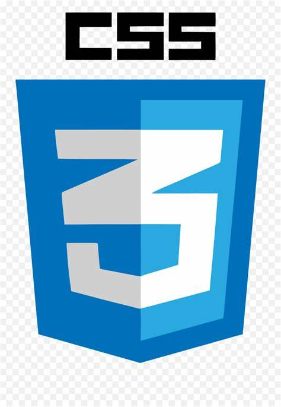

HTML stands for HyperText Markup Language. It is used to design web pages using a markup language. HTML is a combination of Hypertext and Markup language. Hypertext defines the link between web pages.
COMPLETE WEB DEVELOPMENT ROADMAP!
GET STARTED WITH THE BASICS!

ADD SOME STYLING!
CSS (Cascading Style Sheets) is used to style web pages. The reason for using this is to simplify the process of making web pages presentable. It allows you to apply styles on web pages. More importantly, it enables you to do this independently of the HTML that makes up each web page
MAKE YOUR WEBSITE RESPONSIVE!
JavaScript is a lightweight, cross-platform, single-threaded, and interpreted compiled programming language. It is also known as the scripting language for webpages. It is well-known for the development of web pages, and many non-browser environments also use it. JavaScript is a weakly typed language (dynamically typed).
FRAMEWORKS FOR CONVINIENCE!
Frameworks are software tools that help developers create websites and web applications. They provide a set of features, libraries, and guidelines that simplify the development process & reduce the amount of code. Some of the frameworks are:
1. React
2. Angular
3. Vue.js
4. Bootstrap
WEB WITHOUT PHOTOSHOPS? NAHH!
Photoshop is a popular and powerful software for editing and creating digital images. It is developed and published by Adobe Inc. and it is available for Windows and macOS. You can use Photoshop for a variety of purposes, such as photo retouching, graphic design, illustration, animation, and more.
BACKEND CONNECTIVITY!
Backend connectivity in web development refers to the process of linking the frontend (user interface) of a web application with the backend (server-side) logic and data. This enables the web application to perform various functions, such as authentication, data storage, data retrieval, and communication with third-party services.
SOMETHING EXTRA!
Git and GitHub are common tools to manage and collaborate on code projects. Git is a version control system that tracks changes in your code files and lets you switch between different versions. GitHub is a platform that hosts your code files online and provides various features to work with Git, such as issue tracking, code review, & project management.